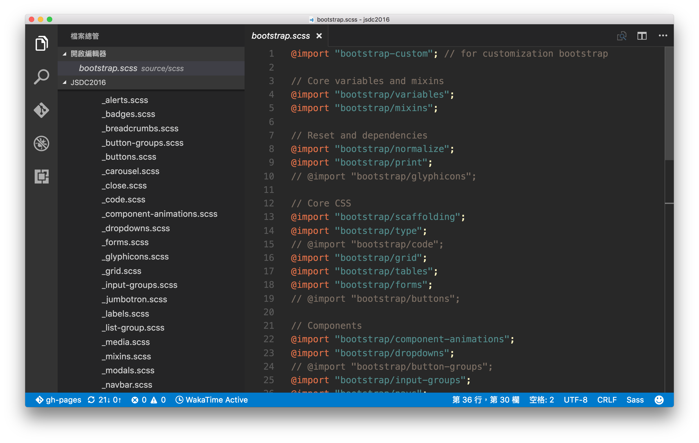

Sass 秘辛
Sass 還有許多厲害的功能，例如變數、算數、函示⋯⋯等，以下將依依介紹：
變數
將 CSS 屬性用變數儲存起來，便能有效地重複使用，也能快速地進行修改。
Sass 使用 $ 來命名變數：
$font-stack: Helvetica, sans-serif;
$primary-color: #333;
h1 {
font-family: $font-stack;
color: $primary-color;
}
p {
color: $primary-color;
}當需要同時修改 h1 和 p 的顏色時，只要修改 $primary-color 就能一次套用。
巢狀結構
善用巢狀結構來避免重複編寫母元素的麻煩，同時提高易讀性和修改的效率。
nav {
ul {
margin: 0;
padding: 0;
list-style: none;
}
li { display: inline-block; }
a {
display: block;
padding: 6px 12px;
text-decoration: none;
}
}算數
Sass 支援 +, -, *, /, %，能夠快速地改變數值。
$font-size: 16px;
$color: #333;
.font-big {
font-size: $font-size * 1.2;
color: $color - #111;
}
.font-small {
font-size: $font-size / 2;
color: $color + #111;
}
Import
Sass 能夠實現 CSS 的模組化，將不同功能的 CSS 檔案拆開，再引入到需要的檔案裡。除了方便管理，也能讓程式碼更精簡、易讀。
以底線 _ 開頭的檔案名稱不會被編譯，這些檔案可以透過 @import '檔案名稱（可省略副檔名）' 引入到其他檔案裡使用。

如圖，Bootstrap 將每個元件拆開，再用 @import 的方式集合起來，方便使用者有效地管理樣式。
Mixin
Mixin 能夠儲存數種樣式，也可以傳入數值，如同程式語言中常見的函式。
@mixin border-radius($radius) {
-webkit-border-radius: $radius;
-moz-border-radius: $radius;
-ms-border-radius: $radius;
border-radius: $radius;
}
.box { @include border-radius(10px); }上述範例使用 @mixin 定義一個名叫 border-radius 的函示，且需要傳入一個參數。定義完成後，就能使用 @include 來取用。